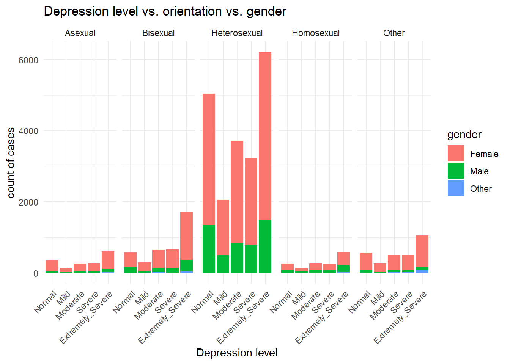
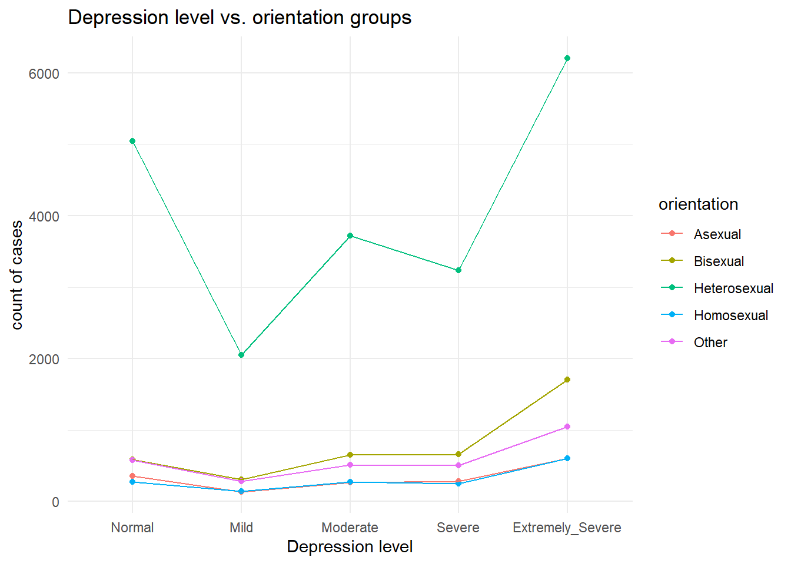
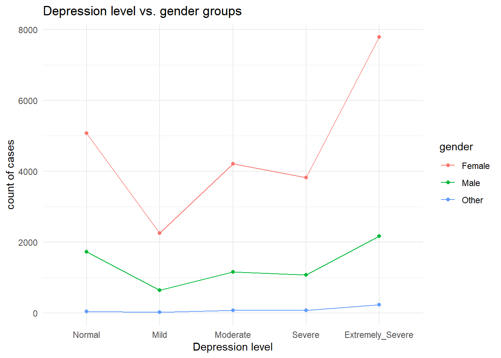
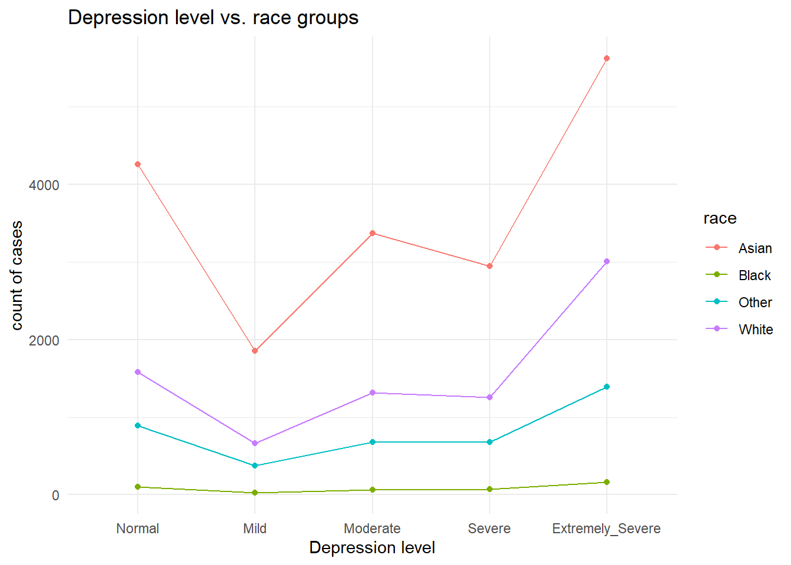
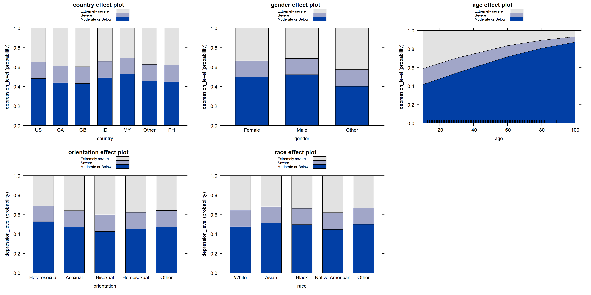
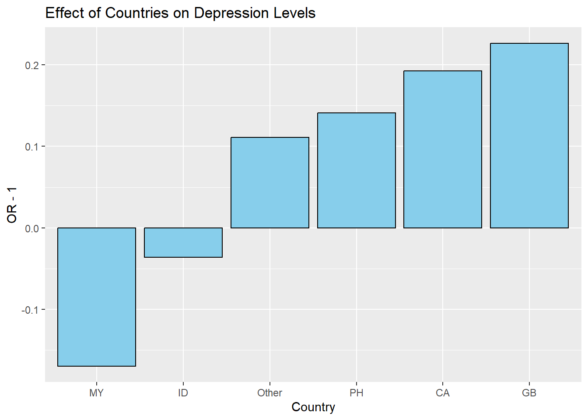

Depression Factors Prediction based on DASS Responses Report
Qin Huang (2284), Shaolei Ma (sm5592), Huanyu Chen (hc3451), Ou Sha (os2424), Lehan Zou (lz2950)
Motivation
Observing that mental health issues appear at a younger and younger age, we would like to test if DASS can potentially provide a means to objectively evaluate the severity and the potential factors of depression among different population including races, ages, etc.
Initial Questions
What factors have a significant impact on the level of depression?
Do different countries exhibit significantly varied rates of depression at different levels of development?
What factors account for the differences in the development of depression levels?
What factors can be used to predict depression levels?
Introduction
Depression, a pervasive mental health challenge, is becoming increasingly prevalent among younger demographics, necessitating a deeper understanding of its existence in diverse populations. This study seeks to harness the potential of the Depression, Anxiety, and Stress Scales (DASS) as a comprehensive tool to objectively assess the severity and underlying factors influencing or contributing to depression across demographic groups, including differences in race, age groups, and more.
Our study utilizes an extensive dataset from the Depression, Anxiety, and Stress Scales (DASS) Responses accessible via Kaggle, to accomplish our objectives. This dataset includes 42 self-reported items, carefully created to evaluate emotional states associated with depression, anxiety, and stress. The objective of our project is to contribute to a more thorough comprehension of the determinants of depression, which could potentially inform customized support strategies and targeted interventions designed for specific population groups.
Our methodology involves filtering data, performing validity checks, and eliminating unreliable data to bolster the integrity of our analysis. We will then stratify individuals’ depression levels and present their distributions across various variables using graphical representations, such as line charts. To compare factor distributions across different depression levels, we will employ statistical tools like the chi-squared test. Our study aims to employ logistic regression models to identify influential factors contributing to varying levels of depression, including age, gender, geographical location, and etc. Additionally, we plan to create data visualizations on coefficients and model fit after constructing the model.
Data
Data Source
DASS-42 Responses
Our group applied the dataset from Kaggle Depression, Anxiety, and Stress Scales Responses (can be find here) for this project. The DASS-42 is a self-report scale consisting of 42 items intended to gauge emotional states related to depression, anxiety, and stress. The primary benefit of utilizing the DASS in a clinical context is its ability to ascertain the specific location of emotional turmoil, contributing to a more comprehensive clinical assessment. Its core function is to evaluate the severity of the fundamental symptoms associated with depression, anxiety, and stress.
# Load the dataset
dass_raw = read.csv("./data/data.csv", sep = "\t")The raw data contain 39775 observations and 172 variables, which contains the information of the participants’ responses.
Data Establishment and Data Cleaning
As we mentioned before, the raw data contains the basic information from the responses. Based on codebook.txt from Kaggle, we checked whether the individual response is meaningful. The criteria are as follow:
The survey includes an accuracy check section, which provides several word spelling questions to check whether participants had filled out the questionnaire carefully.
VCL6,VCL9,VCL12represents words that not exist. If the participants chose 1 in any of these three questions, the response should be omit.The raw data contains different missing values which needs to be omitted. Specifically,
countryvariable has “NONE” as the missing value.Agevariable have impossible values we need to clean out. For example, 299 years for an age is not reasonable.
# kick out meaningless observation
dass = dass_raw %>%
filter(!(VCL6 == 1 | VCL9 == 1 | VCL12 == 1)) %>%
filter(!country == "NONE") %>%
filter(age <= 100)
dass = dass %>%
dplyr::select(matches('Q\\d+A'), country, education, urban, gender, age, religion, orientation, race, married) %>%
na.omit()Since we observed that there are some variables have actual meaning
corresponding to the original numeric value, we refactor these
variables, including education, urban,
gender, religion, orientation,
race, married. In these variables, if the
value is 0, it represents missing value and we delete these
observations.
# refactor the variables
dass_new = dass %>%
mutate(
education = case_when(education == 1 ~ 'Less than high school',
education == 2 ~ 'High school',
education == 3 ~ 'University degree',
education == 4 ~ 'Graduate degree'),
urban = case_when(urban == 1 ~ 'Rural',
urban == 2 ~ 'Suburban',
urban == 3 ~ 'Urban'),
gender = case_when(gender == 1 ~ 'Male',
gender == 2 ~ 'Female',
gender == 3 ~ 'Other'),
religion = case_when(religion == 1 ~ 'Agnostic',
religion == 2 ~ 'Atheist',
religion == 3 ~ 'Buddhist',
religion == 4 ~ 'Christian (Catholic)',
religion == 5 ~ 'Christian (Mormon)',
religion == 6 ~ 'Christian (Protestant)',
religion == 7 ~ 'Christian (Other)',
religion == 8 ~ 'Hindu',
religion == 9 ~ 'Jewish',
religion == 10 ~ 'Muslim',
religion == 11 ~ 'Sikh',
religion == 12 ~ 'Other'),
orientation = case_when(orientation == 1 ~ 'Heterosexual',
orientation == 2 ~ 'Bisexual',
orientation == 3 ~ 'Homosexual',
orientation == 4 ~ 'Asexual',
orientation == 5 ~ 'Other'),
race = case_when(race == 10 ~ 'Asian',
race == 20 ~ 'Arab',
race == 30 ~ 'Black',
race == 40 ~ 'Indigenous Australian',
race == 50 ~ 'Native American',
race == 60 ~ 'White',
race == 70 ~ 'Other'),
married = case_when(married == 1 ~ 'Never married',
married == 2 ~ 'Currently married',
married == 3 ~ 'Previously married')
) %>%
na.omit()Based on the scoring criteria (as shown in DASS-42-scoring.pdf), we add up the values for Q3A, Q5A, Q10A, Q13A, Q16A, Q17A, Q21A, Q24A, Q26A, Q31A, Q34A, Q37A, Q38A and Q42A as the depression scores.
Similarly, add up the values for Q2A, Q4A, Q7A, Q9A, Q15A, Q19A, Q20A, Q23A, Q25A, Q28A, Q30A, Q36A, Q40A and Q41A as the anxiety scores and the sum of Q1A, Q6A, Q8A, Q11A, Q12A, Q14A, Q18A, Q22A, Q27A, Q29A, Q32A, Q33A, Q35A and Q39A as the stress scores.
Considering that the scoring criteria we refer to is 0-3 scale but Kaggle dataset is 1-4 scale, we modify these three scores by minus 14.
After that, we could assign depression level, anxiety level and stress level for each observation refer to the rule of:
Depression （score ~ level)
0 - 9 ~ normal
10 - 13 ~ mild
14 - 20 ~ moderate
21 - 27 ~ severe
>27 ~ extremely severe
Anxiety
0 - 7 ~ normal
8 - 9 ~ mild
10 - 14 ~ moderate
15 - 19 ~ severe
>19 ~ extremely severe
Stress
0 - 14 ~ normal
15 - 18 ~ mild
19 - 25 ~ moderate
26 - 33 ~ severe
>33 ~ extremely severe
Considering that stress, anxiety and depression might have
correlations, we apply correlation test for stress_level,
depression_level, anxiety_level.
dass_heat2 <- dass %>%
mutate(
depression = Q3A + Q5A + Q10A + Q13A + Q16A + Q17A + Q21A + Q24A + Q26A + Q31A + Q34A + Q37A + Q38A + Q42A - 14,
anxiety = Q2A + Q4A + Q7A + Q9A + Q15A + Q19A + Q20A + Q23A + Q25A + Q28A + Q30A + Q36A + Q40A + Q41A - 14,
stress = Q1A + Q6A + Q8A + Q11A + Q12A + Q14A + Q18A + Q22A + Q27A + Q29A + Q32A + Q33A + Q35A + Q39A - 14
) %>%
mutate(depression = case_when(
depression >= 0 & depression <= 9 ~ 0,
depression >= 10 & depression <= 13 ~ 1,
depression >= 14 & depression <= 20 ~ 2,
depression >= 21 & depression <= 27 ~ 3,
depression >= 28 ~ 4
)) %>%
mutate(anxiety = case_when(
anxiety >= 0 & anxiety <= 7 ~ 0,
anxiety >= 8 & anxiety <= 9 ~ 1,
anxiety >= 10 & anxiety <= 14 ~ 2,
anxiety >= 15 & anxiety <= 19 ~ 3,
anxiety >= 20 ~ 4
)) %>%
mutate(stress = case_when(
stress >= 0 & stress <= 14 ~ 0,
stress >= 15 & stress <= 18 ~ 1,
stress >= 19 & stress <= 25 ~ 2,
stress >= 26 & stress <= 33 ~ 3,
stress >= 34 ~ 4
)) %>%
dplyr::select(depression,anxiety,stress)
r1 <- cor(dass_heat2,
method = "pearson",
use = "pairwise.complete.obs"
)
pheatmap(r1,
show_colnames = TRUE,
show_rownames=TRUE,
fontsize=5,
color = colorRampPalette(c('#ffffff','#ff0000'))(100),
annotation_legend=TRUE,
border_color=NA,
scale="none",
cluster_rows = F,
cluster_cols = F,
breaks = seq(0, 1, length.out = 90)
)According to the heat map, we could conclude that these three variables have strong correlation. Therefore, in our project, we take depression_level as the representative.
Finally, we get our clean and tidy dataset for the project.
# create three different dataset
dass_new = dass_new %>%
mutate(
depression = Q3A + Q5A + Q10A + Q13A + Q16A + Q17A + Q21A + Q24A + Q26A + Q31A + Q34A + Q37A + Q38A + Q42A - 14
) %>%
mutate(education = factor(education, levels = c('Less than high school', 'High school', 'University degree', 'Graduate degree'))) %>%
mutate(married = factor(married, levels = c("Previously married", "Currently married", "Never married"))) %>%
dplyr::select(-matches('Q\\d+A'))
# create das level variables
dass_new = dass_new %>%
mutate(depression_level = case_when(
depression >= 0 & depression <= 9 ~ 'Normal',
depression >= 10 & depression <= 13 ~ 'Mild',
depression >= 14 & depression <= 20 ~ 'Moderate',
depression >= 21 & depression <= 27 ~ 'Severe',
depression >= 28 ~ 'Extremely severe'
)) %>%
mutate(depression_level = factor(depression_level, c("Normal","Mild","Moderate","Severe","Extremely severe"))) %>%
dplyr::select(-depression)
head(dass_new)## country education urban gender age religion
## 1 IN High school Urban Female 16 Other
## 3 PL High school Urban Female 17 Christian (Catholic)
## 4 US Less than high school Urban Female 13 Christian (Catholic)
## 5 MY University degree Suburban Female 19 Muslim
## 6 US High school Urban Female 20 Christian (Catholic)
## 7 MX High school Urban Female 17 Christian (Other)
## orientation race married depression_level
## 1 Heterosexual Asian Never married Severe
## 3 Homosexual White Never married Extremely severe
## 4 Other Other Never married Moderate
## 5 Heterosexual Asian Never married Extremely severe
## 6 Heterosexual Other Never married Mild
## 7 Bisexual White Never married Extremely severeData Summary
Above all, we got our dataset for further analysis. It contains 30309 observations and 10 variables. The explanation of each variables are listed below:
country: The country where the participants from.education: The education level of the participants.urban: The urban level of the place where participants live.gender: The sex of the participants.religion: The religion which the participants belong to.orientation: The sexual orientation of the participants.race: The race of participants.married: The marriage status of participants.age: The age when participants response the survey.depression_level: The depression level of the participants according to the survey and scores.
dass_new %>%
dplyr::select(-country) %>%
tbl_summary(type = list(
education ~ "categorical",
urban ~ "categorical",
gender ~ "categorical",
religion ~ "categorical",
orientation ~ "categorical",
race ~ "categorical",
married ~ "categorical",
age ~ "continuous",
depression_level ~ "categorical"
),
statistic = list(all_continuous() ~ "{mean} ({sd})"),
digits = all_continuous() ~ 1,
label = c(
education = "Education level",
urban = "Urban level",
gender = "Gender",
religion = "Religion",
orientation = 'Sexual orientation',
race = 'Race',
married = 'Marriage status',
age = "Age (Years)",
depression_level = "Depression level"
)) %>%
bold_labels() %>%
as_gt() # Display the table as a gt object| Characteristic | N = 30,3091 |
|---|---|
| Education level | |
| Less than high school | 2,997 (9.9%) |
| High school | 11,374 (38%) |
| University degree | 11,957 (39%) |
| Graduate degree | 3,981 (13%) |
| Urban level | |
| Rural | 6,295 (21%) |
| Suburban | 10,283 (34%) |
| Urban | 13,731 (45%) |
| Gender | |
| Female | 23,137 (76%) |
| Male | 6,754 (22%) |
| Other | 418 (1.4%) |
| Age (Years) | 23.5 (8.4) |
| Religion | |
| Agnostic | 2,406 (7.9%) |
| Atheist | 2,943 (9.7%) |
| Buddhist | 419 (1.4%) |
| Christian (Catholic) | 2,359 (7.8%) |
| Christian (Mormon) | 83 (0.3%) |
| Christian (Other) | 1,699 (5.6%) |
| Christian (Protestant) | 1,177 (3.9%) |
| Hindu | 531 (1.8%) |
| Jewish | 101 (0.3%) |
| Muslim | 17,204 (57%) |
| Other | 1,343 (4.4%) |
| Sikh | 44 (0.1%) |
| Sexual orientation | |
| Asexual | 1,649 (5.4%) |
| Bisexual | 3,921 (13%) |
| Heterosexual | 20,259 (67%) |
| Homosexual | 1,548 (5.1%) |
| Other | 2,932 (9.7%) |
| Race | |
| Arab | 228 (0.8%) |
| Asian | 18,041 (60%) |
| Black | 432 (1.4%) |
| Indigenous Australian | 12 (<0.1%) |
| Native American | 159 (0.5%) |
| Other | 3,621 (12%) |
| White | 7,816 (26%) |
| Marriage status | |
| Previously married | 771 (2.5%) |
| Currently married | 3,331 (11%) |
| Never married | 26,207 (86%) |
| Depression level | |
| Normal | 6,832 (23%) |
| Mild | 2,921 (9.6%) |
| Moderate | 5,433 (18%) |
| Severe | 4,947 (16%) |
| Extremely severe | 10,176 (34%) |
| 1 n (%); Mean (SD) | |
Exploratory Analysis
The data we used to analyze potential factors of depression levels
comes from a worldwide survey. The raw data includes 9 potential
factors:country, education,
urban, gender, religion,
orientation, race, married, and
age. We would like to focus on country,
orientation, gender, age, and
race to analyze the relationship between these factors and
depression level.
Interactive World Map
We designed a shiny app to provide visualizations of depression levels for individual countries on a global scale.
The sidebar can be used to select different depression levels, and for the analysis of survey answers based on proportion or occurrence.
A screenshot is shown below:
This interactive graph also illustrates the imbalance of responses. If we limit the occurrences to be larger than 500, there will only be Malaysia and United States left. When interpreting the proportion of different depression level, the sample size must be considered.
Plots of Potential Factors across Depression Levels
With our existence data, we need to evaluate the depression level
with respect to different populations. After some preliminary research
and plotting, we identified a potential correlation between four
variables including gender, orientation,
age ,race and our predictor Depression Level.
Subsequently, we proceeded with following exploratory data analysis to
identify pertinent variables that could function as independent
variables in our regression model.
Overall view of gender, orientation & depression
Our first plot gives an overall view of the relationship with gender, orientation and depression level.
The plot below shows the number of different depression level cases in each gender groups among orientation.
dass_new|>
group_by(gender, orientation)|>
summarise(Normal = sum(depression_level=="Normal"),
Mild = sum(depression_level=="Mild"),
Moderate = sum(depression_level=="Moderate"),
Severe = sum(depression_level=="Severe"),
Extremely_Severe = sum(depression_level=="Extremely severe"),
.groups = "keep")|>
pivot_longer(
Normal:Extremely_Severe,
names_to = "Level",
values_to = "count")|>
mutate(Level = factor(Level, levels = unique(Level)))|>
ggplot(aes(x = Level, y = count, fill= gender)) +
geom_col()+
theme_minimal()+
facet_grid(~orientation)+
theme(axis.text.x = element_text(angle = 45, hjust = 1)) +
labs(x = "Depression level",
y = "count of cases",
title = "Depression level vs. orientation vs. gender")
The x axis illustrates depression levels categorized by various orientations, while the y axis denotes the count of cases. Additionally, the bar plot’s proportional filling conveys the gender distribution within a particular depression level under each orientation. From the plot, we observed that the female gender group in all orientation categories tends to exhibit a higher number of depression cases compared to other gender groups. Also, we found that depression level has significant differences between distinct orientation groups and genders. So we would like to further investigate the correlation between depression levels and each factor individually.
Orientation
Next, we would like to delve deeper into studying the relationship between the level of depression and orientation.
dass_new|>
group_by(orientation)|>
summarise(Normal = sum(depression_level=="Normal"),
Mild = sum(depression_level=="Mild"),
Moderate = sum(depression_level=="Moderate"),
Severe = sum(depression_level=="Severe"),
Extremely_Severe = sum(depression_level=="Extremely severe"))|>
pivot_longer(
Normal:Extremely_Severe,
names_to = "Level",
values_to = "Count")|>
mutate(Level = factor(Level, levels = unique(Level)))|>
ggplot(aes(x = Level, y = Count, group = orientation, color = orientation)) +
geom_point()+
geom_line()+
theme_minimal()+
labs(x = "Depression level",
y = "count of cases",
title = "Depression level vs. orientation groups")
This plot shows the relationship between depression levels and orientations. Given that heterosexual data is the most abundant, it naturally exhibits the highest case count. However, our primary emphasis in this analysis is on discerning the overarching trends across various depression levels.Notably, we observe fluctuations in individuals identifying as Heterosexual across depression levels, while there is a conspicuous rise in count among Bisexual individuals as the severity of depression increases. Asexual and Homosexual individuals display a relatively even distribution across all levels. The “Other” category exhibits a low count for “Mild” but experiences an increase with severity, peaking at the “Extremely Severe” level.
Gender
# distribution histogram of gender
dass_new|>
group_by(gender)|>
summarise(Normal = sum(depression_level=="Normal"),
Mild = sum(depression_level=="Mild"),
Moderate = sum(depression_level=="Moderate"),
Severe = sum(depression_level=="Severe"),
Extremely_Severe = sum(depression_level=="Extremely severe"))|>
pivot_longer(
Normal:Extremely_Severe,
names_to = "Level",
values_to = "Count")|>
mutate(Level = factor(Level, levels = unique(Level)))|>
ggplot(aes(x = Level, y = Count, group = gender, color = gender)) +
geom_point()+
geom_line()+
theme_minimal()+
labs(x = "Depression level",
y = "count of cases",
title = "Depression level vs. gender groups")
In our third plot, it becomes evident that females consistently exhibit a notably higher count of depression cases across all levels, especially in the “Normal” and “Extremely Severe” levels. Conversely, males display a lower case count at all levels, with a slight decrease at “Mild” followed by an increase at “Moderate.” The case count for the “Other” gender category remains relatively stable across all levels of depression.
Race
dass_new|>
# form new race groups
mutate(race = case_when(race == "Native American" ~ "Other",
race=="Arab"~ "Other",
race == "Indigenous Australian" ~ "Other",
race == "Other" ~ "Other",
race == "Black" ~ "Black",
race == "White" ~ "White",
race == "Asian" ~ "Asian"))|>
group_by(race)|>
summarise(Normal = sum(depression_level=="Normal"),
Mild = sum(depression_level=="Mild"),
Moderate = sum(depression_level=="Moderate"),
Severe = sum(depression_level=="Severe"),
Extremely_Severe = sum(depression_level=="Extremely severe"))|>
pivot_longer(
Normal:Extremely_Severe,
names_to = "Level",
values_to = "Count")|>
mutate(Level = factor(Level, levels = unique(Level)))|>
ggplot(aes(x = Level, y = Count, group = race, color = race)) +
geom_point()+
geom_line()+
theme_minimal()+
labs(x = "Depression level",
y = "count of cases",
title = "Depression level vs. race groups")
The fourth plot examines depression levels across various races. The Asian group demonstrates the most fluctuating trend, with notable values at “Normal” and “Extremely Severe.” The White group and other racial categories exhibit similar trends, showing a slight decrease at “Mild” and a substantial increase at “Extremely Severe.” In contrast, Black individuals maintain a consistent count across all levels of depression.
Age
dass_new %>%
ggplot(aes(x=depression_level, y=age)) +
geom_boxplot(aes(fill=depression_level)) +
labs(title = "Age Distribution for Each Depression Level",
xlab = "Depression Level",
ylab = "Age")+
theme_minimal()Regarding the age variable, we examined the box plot representing the general distribution of age and depression level. Our observation revealed the presence of numerous outliers. Across all depression levels, the data predominantly centered on the teenage age groups around 18~25. Thus we divided age into four groups(under 18, 18 ~ 25, 25 ~ 50 and 50+) in next step.
dass_new|>
# form age groups
mutate(age = case_when(age <= 18 ~ "teenage",
age <= 25 & age >18 ~ "young adult",
age <= 50 & age >25 ~ "adult",
age >50 ~ "older"))|>
group_by(age)|>
summarise(Normal = sum(depression_level=="Normal"),
Mild = sum(depression_level=="Mild"),
Moderate = sum(depression_level=="Moderate"),
Severe = sum(depression_level=="Severe"),
Extremely_Severe = sum(depression_level=="Extremely severe"))|>
pivot_longer(
Normal:Extremely_Severe,
names_to = "Level",
values_to = "Count")|>
mutate(Level = factor(Level, levels = unique(Level)))|>
ggplot(aes(x = Level, y = Count, group = age, color = age)) +
geom_line()+
geom_point()+
theme_minimal()+
labs(x = "Depression level",
y = "count of cases",
title = "Depression level vs. age groups")This plot reveals that young adults consistently exhibit the highest counts of depression at all levels, experiencing a significant increase at the “Extremely Severe” level. The teenage group has a lower case count at the “Normal” level compared to the adult group but surpasses it at the “Moderate” level. Older individuals maintain a relatively stable count across all levels, with a slight increase at the “Extremely Severe” level.
Additional Analysis
From the plots regarding the depression levels and factors, we
observed that the distribution of cases of different depression levels
among different orientation groups, the distribution of cases of
different depression levels among different gender groups, the
distribution of cases of different depression levels among different age
groups, and the distribution of cases of different depression levels
among different race groups follow a similar pattern. Thus, we would
like to perform a chi-squared test to study if these factors and
depression levels are associated.
Chi-squared Test
1: Orientation & Depression Level
\(H_0\): The depression levels and
orientation are independent.
\(H_1\): The depression levels and
orientation are associated.
# show result table to perform chi-squared test
dass_new|>
group_by(orientation)|>
summarise(Normal = sum(depression_level=="Normal"),
Mild = sum(depression_level=="Mild"),
Moderate = sum(depression_level=="Moderate"),
Severe = sum(depression_level=="Severe"),
Extremely_Severe = sum(depression_level=="Extremely severe"))## # A tibble: 5 × 6
## orientation Normal Mild Moderate Severe Extremely_Severe
## <chr> <int> <int> <int> <int> <int>
## 1 Asexual 354 139 267 282 607
## 2 Bisexual 588 304 655 665 1709
## 3 Heterosexual 5040 2053 3722 3238 6206
## 4 Homosexual 273 142 276 254 603
## 5 Other 577 283 513 508 1051# perform chi-squared test
chisq.test(pull(dass_new, orientation), pull(dass_new, depression_level))|>
broom::tidy()|>
knitr::kable()| statistic | p.value | parameter | method |
|---|---|---|---|
| 404.2459 | 0 | 16 | Pearson’s Chi-squared test |
The null hypothesis for the chi-squared test is that the depression
levels and orientation are independent. Since the p-value is smaller
than 0.05, the null hypothesis is rejected.
We may conclude that orientation is associated with depression
levels.
2: Gender & Depression Level
\(H_0\): The depression levels and
gender are independent.
\(H_1\): The depression levels and
gender are associated.
# show result table to perform chi-squared test
dass_new|>
group_by(gender)|>
summarise(Normal = sum(depression_level=="Normal"),
Mild = sum(depression_level=="Mild"),
Moderate = sum(depression_level=="Moderate"),
Severe = sum(depression_level=="Severe"),
Extremely_Severe = sum(depression_level=="Extremely severe"))## # A tibble: 3 × 6
## gender Normal Mild Moderate Severe Extremely_Severe
## <chr> <int> <int> <int> <int> <int>
## 1 Female 5073 2254 4208 3813 7789
## 2 Male 1723 644 1158 1067 2162
## 3 Other 36 23 67 67 225# perform chi-squared test
chisq.test(pull(dass_new, gender), pull(dass_new, depression_level))|>
broom::tidy()|>
knitr::kable()| statistic | p.value | parameter | method |
|---|---|---|---|
| 135.6119 | 0 | 8 | Pearson’s Chi-squared test |
The null hypothesis for the chi-squared test is that the depression
levels and gender are independent. Since the p-value is smaller than
0.05, the null hypothesis is rejected.
We may conclude that gender is associated with depression levels.
3: Age & Depression Level
\(H_0\): The depression levels and
age are independent.
\(H_1\): The depression levels and age
are associated.
dass_chi <- dass_new|>
# form age groups
mutate(age = case_when(age <= 18 ~ "teenage",
age <= 25 & age >18 ~ "young adult",
age <= 50 & age >25 ~ "adult",
age >50 ~ "older"))
# show result table to perform chi-squared test
dass_chi|>
group_by(age)|>
summarise(Normal = sum(depression_level=="Normal"),
Mild = sum(depression_level=="Mild"),
Moderate = sum(depression_level=="Moderate"),
Severe = sum(depression_level=="Severe"),
Extremely_Severe = sum(depression_level=="Extremely severe"))## # A tibble: 4 × 6
## age Normal Mild Moderate Severe Extremely_Severe
## <chr> <int> <int> <int> <int> <int>
## 1 adult 1949 709 1176 934 1789
## 2 older 240 64 116 75 192
## 3 teenage 1235 555 1256 1327 3105
## 4 young adult 3408 1593 2885 2611 5090# perform chi-squared test
chisq.test(pull(dass_chi, age), pull(dass_chi, depression_level))|>
broom::tidy()|>
knitr::kable()| statistic | p.value | parameter | method |
|---|---|---|---|
| 651.3207 | 0 | 12 | Pearson’s Chi-squared test |
The null hypothesis for the chi-squared test is that depression
levels and age are independent. Since the p-value is smaller than 0.05,
the null hypothesis is rejected.
We may conclude that age is associated with depression levels.
4: Race & Depression Level
\(H_0\): The depression levels and
race groups are independent.
\(H_1\): The depression levels and race
groups are associated.
dass_chi <- dass_new|>
# form new race groups
mutate(race = case_when(race == "Native American" ~ "Other",
race=="Arab"~ "Other",
race == "Indigenous Australian" ~ "Other",
race == "Other" ~ "Other",
race == "Black" ~ "Black",
race == "White" ~ "White",
race == "Asian" ~ "Asian"))
# show result table to perform chi-squared test
dass_chi|>
group_by(race)|>
summarise(Normal = sum(depression_level=="Normal"),
Mild = sum(depression_level=="Mild"),
Moderate = sum(depression_level=="Moderate"),
Severe = sum(depression_level=="Severe"),
Extremely_Severe = sum(depression_level=="Extremely severe"))## # A tibble: 4 × 6
## race Normal Mild Moderate Severe Extremely_Severe
## <chr> <int> <int> <int> <int> <int>
## 1 Asian 4254 1851 3368 2944 5624
## 2 Black 105 30 64 71 162
## 3 Other 893 378 682 679 1388
## 4 White 1580 662 1319 1253 3002# perform chi-squared test
chisq.test(pull(dass_chi, race), pull(dass_chi, depression_level))|>
broom::tidy()|>
knitr::kable()| statistic | p.value | parameter | method |
|---|---|---|---|
| 154.3871 | 0 | 12 | Pearson’s Chi-squared test |
The null hypothesis for the chi-squared test is that depression
levels and race groups are independent. Since the p-value is smaller
than 0.05, the null hypothesis is rejected.
We may conclude that race is associated with depression levels.
Based on the performed tests, orientation, gender, age, and race are strongly associated with depression levels.
Regression
We want to investigate the relationship between demographic variables and depression levels. Because the dependent variable depression_level is an ordinal variable with five levels (“Normal”, “Mild”, “Moderate”, “Severe”, “Extremely severe”), we choose to fit an ordered logit model.
Independent Variables
Imbalanced data may result in an inaccurate outcome due to a small sample size in some classes. Therefore, we first want to test the distribution of independent variables to avoid the imbalance of samples between different categories.
dass_new = read_csv("data/dass_new.csv")
dass_new |>
dplyr::select(age, everything()) |>
mutate(across(country:depression_level, factor)) |>
summary()## age country education urban
## Min. :13.00 MY :16932 Graduate degree : 3981 Rural : 6295
## 1st Qu.:19.00 US : 5989 High school :11374 Suburban:10283
## Median :21.00 GB : 891 Less than high school: 2997 Urban :13731
## Mean :23.45 CA : 752 University degree :11957
## 3rd Qu.:25.00 ID : 746
## Max. :99.00 PH : 581
## (Other): 4418
## gender religion orientation
## Female:23137 Muslim :17204 Asexual : 1649
## Male : 6754 Atheist : 2943 Bisexual : 3921
## Other : 418 Agnostic : 2406 Heterosexual:20259
## Christian (Catholic): 2359 Homosexual : 1548
## Christian (Other) : 1699 Other : 2932
## Other : 1343
## (Other) : 2355
## race married
## Arab : 228 Currently married : 3331
## Asian :18041 Never married :26207
## Black : 432 Previously married: 771
## Indigenous Australian: 12
## Native American : 159
## Other : 3621
## White : 7816
## depression_level
## Extremely severe:10176
## Mild : 2921
## Moderate : 5433
## Normal : 6832
## Severe : 4947
##
## Some categories contain few samples (e.g. countries other than the listed six countries have less than 500 samples). For the efficacy of the model and considering which class most interests us, we regroup the independent variables following the standards below:
country: Group the country with less than 500 samples into “Other”, and set “US” to be the reference level.education: Order the variable by the length of education.race: We follow standards on race and ethnicity to include only “Asian”, “Black”, “Native American”, “White”, and make other categories “Other”. We set “White” to be the reference level.religion: We conclude “Christian (Catholic)”, “Christian (Mormon)”, “Christian (Other)”, “Christian (Protestant)” into “Christian”, and set it as the reference level.orientation: Set the “Heterosexual” to be the reference level.married: Order the variable by marriage status.
dass_fit_df =
dass_new |>
mutate(
country = relevel(as.factor(ifelse(country %in% c("MY", "US", "GB", "CA", "ID", "PH"), country, "Other")), ref = "US"),
education = factor(education, levels = c("Less than high school", "High school", "University degree", "Graduate degree")),
race = relevel(as.factor(ifelse(race %in% c("Arab", "Indigenous Australian"), "Other", race)), ref = "White"),
religion = relevel(as.factor(ifelse(substr(religion, 1, 9) == "Christian", "Christian", religion)), "Christian"),
orientation = relevel(as.factor(orientation), "Heterosexual"),
married = factor(married, levels = c("Never married", "Currently married", "Previously married")),
depression_level = factor(depression_level, levels = c("Normal", "Mild", "Moderate", "Severe", "Extremely severe"))
)
dass_fit_df |> summary()## country education urban
## US : 5989 Less than high school: 2997 Length:30309
## CA : 752 High school :11374 Class :character
## GB : 891 University degree :11957 Mode :character
## ID : 746 Graduate degree : 3981
## MY :16932
## Other: 4418
## PH : 581
## gender age religion orientation
## Length:30309 Min. :13.00 Muslim :17204 Heterosexual:20259
## Class :character 1st Qu.:19.00 Christian: 5318 Asexual : 1649
## Mode :character Median :21.00 Atheist : 2943 Bisexual : 3921
## Mean :23.45 Agnostic : 2406 Homosexual : 1548
## 3rd Qu.:25.00 Other : 1343 Other : 2932
## Max. :99.00 Hindu : 531
## (Other) : 564
## race married depression_level
## White : 7816 Never married :26207 Normal : 6832
## Asian :18041 Currently married : 3331 Mild : 2921
## Black : 432 Previously married: 771 Moderate : 5433
## Native American: 159 Severe : 4947
## Other : 3861 Extremely severe:10176
##
## Model Fitting
First fit a model without variables selection.
dass_fit =
dass_fit_df |>
polr(depression_level ~ ., data = _)
(fit_s =
dass_fit |>
summary())##
## Re-fitting to get Hessian## Call:
## polr(formula = depression_level ~ ., data = dass_fit_df)
##
## Coefficients:
## Value Std. Error t value
## countryCA 0.148517 0.071130 2.0880
## countryGB 0.171354 0.067062 2.5552
## countryID 0.043053 0.079163 0.5439
## countryMY -0.008007 0.050543 -0.1584
## countryOther 0.102717 0.039048 2.6305
## countryPH 0.264462 0.087392 3.0262
## educationHigh school -0.150185 0.040509 -3.7075
## educationUniversity degree -0.376834 0.044291 -8.5082
## educationGraduate degree -0.530279 0.052303 -10.1386
## urbanSuburban -0.027283 0.029139 -0.9363
## urbanUrban 0.046331 0.027761 1.6689
## genderMale -0.166471 0.025998 -6.4032
## genderOther 0.339713 0.096112 3.5346
## age -0.007523 0.001868 -4.0267
## religionAgnostic 0.187629 0.046183 4.0627
## religionAtheist 0.260434 0.044725 5.8230
## religionBuddhist -0.210089 0.095058 -2.2101
## religionHindu 0.099165 0.087998 1.1269
## religionJewish -0.044442 0.184671 -0.2407
## religionMuslim 0.019758 0.045019 0.4389
## religionOther 0.193342 0.056459 3.4245
## religionSikh 0.036949 0.272258 0.1357
## orientationAsexual 0.173086 0.046812 3.6975
## orientationBisexual 0.374809 0.032818 11.4208
## orientationHomosexual 0.286605 0.048017 5.9688
## orientationOther 0.195966 0.036306 5.3976
## raceAsian -0.091787 0.044414 -2.0666
## raceBlack -0.101452 0.091268 -1.1116
## raceNative American 0.136167 0.146638 0.9286
## raceOther -0.063766 0.044043 -1.4478
## marriedCurrently married -0.528618 0.040748 -12.9730
## marriedPreviously married 0.041553 0.075500 0.5504
##
## Intercepts:
## Value Std. Error t value
## Normal|Mild -1.6935 0.0604 -28.0233
## Mild|Moderate -1.1882 0.0600 -19.8029
## Moderate|Severe -0.4097 0.0597 -6.8678
## Severe|Extremely severe 0.2936 0.0597 4.9209
##
## Residual Deviance: 91341.20
## AIC: 91413.20When conducting an ordered logit model, the underlying assumption is that the coefficients that describe the relationship between, say, the lowest versus all higher categories of the response variable are the same as those that describe the relationship between the next lowest category and all higher categories, etc. This is called the proportional odds assumption or the parallel assumption.
Now, we want to test if the model conducted meets the parallel assumption.
car::poTest(dass_fit)##
## Tests for Proportional Odds
## polr(formula = depression_level ~ ., data = dass_fit_df)
##
## b[polr] b[>Normal] b[>Mild] b[>Moderate]
## Overall
## countryCA 1.49e-01 1.82e-01 1.54e-01 1.64e-01
## countryGB 1.71e-01 2.21e-01 1.44e-01 1.46e-01
## countryID 4.31e-02 1.63e-01 1.53e-02 4.50e-02
## countryMY -8.01e-03 1.10e-01 -9.42e-03 -2.97e-02
## countryOther 1.03e-01 9.00e-02 6.84e-02 1.29e-01
## countryPH 2.64e-01 3.82e-01 3.76e-01 2.69e-01
## educationHigh school -1.50e-01 -1.31e-01 -1.25e-01 -1.47e-01
## educationUniversity degree -3.77e-01 -3.64e-01 -3.57e-01 -3.86e-01
## educationGraduate degree -5.30e-01 -5.59e-01 -5.32e-01 -5.07e-01
## urbanSuburban -2.73e-02 1.83e-02 3.45e-02 -2.71e-02
## urbanUrban 4.63e-02 7.74e-02 8.22e-02 4.57e-02
## genderMale -1.66e-01 -2.18e-01 -1.89e-01 -1.45e-01
## genderOther 3.40e-01 6.00e-01 5.24e-01 3.05e-01
## age -7.52e-03 -1.18e-02 -1.06e-02 -8.09e-03
## religionAgnostic 1.88e-01 1.34e-01 1.90e-01 2.27e-01
## religionAtheist 2.60e-01 1.76e-01 2.38e-01 2.37e-01
## religionBuddhist -2.10e-01 -3.18e-01 -1.88e-01 -2.02e-01
## religionHindu 9.92e-02 9.13e-02 3.07e-02 1.28e-01
## religionJewish -4.44e-02 -1.28e-02 -1.91e-01 3.51e-02
## religionMuslim 1.98e-02 2.02e-02 8.06e-02 3.27e-02
## religionOther 1.93e-01 1.82e-01 1.80e-01 2.04e-01
## religionSikh 3.69e-02 1.24e-01 2.65e-01 6.49e-02
## orientationAsexual 1.73e-01 8.23e-02 1.37e-01 2.17e-01
## orientationBisexual 3.75e-01 4.36e-01 4.06e-01 3.67e-01
## orientationHomosexual 2.87e-01 3.52e-01 2.97e-01 2.59e-01
## orientationOther 1.96e-01 2.10e-01 1.87e-01 2.07e-01
## raceAsian -9.18e-02 -1.97e-01 -1.54e-01 -7.88e-02
## raceBlack -1.01e-01 -3.18e-01 -1.74e-01 -3.18e-02
## raceNative American 1.36e-01 2.45e-01 2.22e-01 2.19e-01
## raceOther -6.38e-02 -1.77e-01 -1.33e-01 -3.46e-02
## marriedCurrently married -5.29e-01 -4.77e-01 -4.85e-01 -5.13e-01
## marriedPreviously married 4.16e-02 4.13e-02 5.71e-02 1.10e-01
## b[>Severe] Chisquare df Pr(>Chisq)
## Overall 168.29 96 7.3e-06 ***
## countryCA 1.14e-01 0.84 3 0.839
## countryGB 1.77e-01 1.80 3 0.615
## countryID 1.26e-02 4.70 3 0.195
## countryMY -5.16e-02 8.85 3 0.031 *
## countryOther 1.05e-01 3.32 3 0.345
## countryPH 1.76e-01 3.33 3 0.344
## educationHigh school -1.86e-01 1.68 3 0.641
## educationUniversity degree -4.25e-01 1.64 3 0.650
## educationGraduate degree -5.42e-01 1.15 3 0.766
## urbanSuburban -8.24e-02 10.81 3 0.013 *
## urbanUrban 4.01e-03 5.40 3 0.145
## genderMale -1.50e-01 5.67 3 0.129
## genderOther 2.99e-01 4.14 3 0.247
## age -2.29e-04 30.13 3 1.3e-06 ***
## religionAgnostic 1.90e-01 3.47 3 0.325
## religionAtheist 2.99e-01 5.55 3 0.136
## religionBuddhist -1.16e-01 4.70 3 0.195
## religionHindu 1.20e-01 2.20 3 0.532
## religionJewish -3.46e-02 3.08 3 0.379
## religionMuslim -2.39e-02 5.67 3 0.129
## religionOther 2.04e-01 0.20 3 0.978
## religionSikh -7.04e-02 1.22 3 0.748
## orientationAsexual 2.06e-01 5.93 3 0.115
## orientationBisexual 3.62e-01 2.64 3 0.450
## orientationHomosexual 2.66e-01 2.27 3 0.519
## orientationOther 1.85e-01 1.13 3 0.770
## raceAsian -1.59e-02 8.57 3 0.036 *
## raceBlack -1.11e-02 8.62 3 0.035 *
## raceNative American 5.56e-02 1.39 3 0.709
## raceOther 1.15e-04 9.10 3 0.028 *
## marriedCurrently married -6.06e-01 6.76 3 0.080 .
## marriedPreviously married -8.04e-02 8.10 3 0.044 *
## ---
## Signif. codes: 0 '***' 0.001 '**' 0.01 '*' 0.05 '.' 0.1 ' ' 1Because the overall \(p-value < 0.001\), we reject the null hypothesis and conclude that the parallel assumption is not met.
To meet the parallel assumption, considering the variables of interest in EDA, we try the following two methods:
- Select independent variables: Because we think
religionandrace,marriedandorientation,countryandurbanare strongly correlated with each other, and we care more aboutrace,orientation, andcountry, first deletereligion,married, andurban. We also deleteeducationto meet the parallel assumption. - Regroup dependent variable: Regroup
depression_levelinto “Moderate or Below”, “Severe”, “Extremely severe”.
dass_fit_df =
dass_fit_df |>
mutate(depression_level = factor(case_match(
depression_level,
"Normal" ~ "Moderate or Below",
"Mild" ~ "Moderate or Below","Moderate" ~ "Moderate or Below",
"Severe" ~ "Severe",
"Extremely severe" ~ "Extremely severe"
), level = c("Moderate or Below", "Severe", "Extremely severe")))
dass_fit1 =
dass_fit_df |>
polr(depression_level ~ country + gender + age + orientation + race, data = _)
dass_fit1 |> poTest()##
## Tests for Proportional Odds
## polr(formula = depression_level ~ country + gender + age + orientation +
## race, data = dass_fit_df)
##
## b[polr] b[>Moderate or Below] b[>Severe] Chisquare df
## Overall 26.43 17
## countryCA 0.17607 0.19690 0.15297 0.50 1
## countryGB 0.20429 0.19144 0.22882 0.46 1
## countryID -0.03701 -0.01653 -0.06773 0.57 1
## countryMY -0.18594 -0.16470 -0.22038 2.40 1
## countryOther 0.10529 0.11040 0.09276 0.30 1
## countryPH 0.13180 0.16664 0.09162 1.01 1
## genderMale -0.10458 -0.10721 -0.10290 0.04 1
## genderOther 0.38262 0.38336 0.38755 0.00 1
## age -0.02532 -0.02674 -0.02206 17.25 1
## orientationAsexual 0.22638 0.23486 0.22828 0.03 1
## orientationBisexual 0.40403 0.40507 0.40757 0.01 1
## orientationHomosexual 0.29795 0.28623 0.30345 0.17 1
## orientationOther 0.22051 0.23073 0.21375 0.27 1
## raceAsian -0.15662 -0.17315 -0.13328 1.31 1
## raceBlack -0.08899 -0.07969 -0.07401 0.01 1
## raceNative American 0.10589 0.19327 0.02714 1.40 1
## raceOther -0.10281 -0.11014 -0.09253 0.24 1
## Pr(>Chisq)
## Overall 0.067 .
## countryCA 0.480
## countryGB 0.496
## countryID 0.451
## countryMY 0.121
## countryOther 0.584
## countryPH 0.316
## genderMale 0.850
## genderOther 0.960
## age 3.3e-05 ***
## orientationAsexual 0.873
## orientationBisexual 0.929
## orientationHomosexual 0.678
## orientationOther 0.601
## raceAsian 0.252
## raceBlack 0.942
## raceNative American 0.236
## raceOther 0.627
## ---
## Signif. codes: 0 '***' 0.001 '**' 0.01 '*' 0.05 '.' 0.1 ' ' 1The model meets the parallel assumption at \(\alpha=0.05\) level (with an overall \(p = 0.067 > 0.05\)).
Depression Levels Distribution
After selecting independent variables, we can further visualize the data based on the effective covariates as well as the good stratum of depression level.
# Create a data frame with the predictor values for visualization
predictor_data <- model.matrix(depression_level ~ country + gender + age
+ orientation + race, data = dass_fit_df)
# Compute the effects
effects <- allEffects(dass_fit1, xlevels = list(predictor_data))
# Plot the effects
plot(effects, style = "stacked")
The accompanying graphs display the probability of depression levels across various categorical and continuous variables. For instance, the trend depicted in the graph indicates higher rates of extreme depression among young people.
Results
dass_fit1 |> summary()##
## Re-fitting to get Hessian## Call:
## polr(formula = depression_level ~ country + gender + age + orientation +
## race, data = dass_fit_df)
##
## Coefficients:
## Value Std. Error t value
## countryCA 0.17607 0.073979 2.3799
## countryGB 0.20429 0.069477 2.9405
## countryID -0.03701 0.081140 -0.4561
## countryMY -0.18594 0.043530 -4.2716
## countryOther 0.10529 0.039054 2.6959
## countryPH 0.13180 0.088407 1.4908
## genderMale -0.10458 0.027345 -3.8244
## genderOther 0.38262 0.097990 3.9047
## age -0.02532 0.001429 -17.7177
## orientationAsexual 0.22638 0.048992 4.6208
## orientationBisexual 0.40403 0.033836 11.9406
## orientationHomosexual 0.29795 0.050291 5.9245
## orientationOther 0.22051 0.038272 5.7617
## raceAsian -0.15662 0.042257 -3.7064
## raceBlack -0.08899 0.094209 -0.9447
## raceNative American 0.10589 0.150678 0.7027
## raceOther -0.10281 0.043678 -2.3539
##
## Intercepts:
## Value Std. Error t value
## Moderate or Below|Severe -0.6896 0.0476 -14.4866
## Severe|Extremely severe 0.0067 0.0474 0.1414
##
## Residual Deviance: 60223.12
## AIC: 60261.12The estimated model can be written as: \[\begin{align*} \text{logit}(\hat P(\text{Depression Level} \leq \text{Severe})) &= -0.69 \\ &+ 0.18 \times I(\text{country} = \text{CA}) \\ &+ 0.20 \times I(\text{country} = \text{GB}) \\ &- 0.04 \times I(\text{country} = \text{ID}) \\ &- 0.19 \times I(\text{country} = \text{MY}) \\ &+ 0.13 \times I(\text{country} = \text{PH}) \\ &+ 0.11 \times I(\text{country} = \text{Other}) \\ &- 0.10 \times I(\text{gender} = \text{Male}) \\ &+ 0.38 \times I(\text{gender} = \text{Other}) \\ &- 0.03 \times \text{age} \\ &+ 0.23 \times I(\text{orientation} = \text{Asexual}) \\ &+ 0.40 \times I(\text{orientation} = \text{Bisexual}) \\ &+ 0.30 \times I(\text{orientation} = \text{Homosexual}) \\ &+ 0.22 \times I(\text{orientation} = \text{Other}) \\ &- 0.16 \times I(\text{race} = \text{Asian}) \\ &- 0.09 \times I(\text{race} = \text{Black}) \\ &+ 0.11 \times I(\text{race} = \text{Native American}) \\ &- 0.10 \times I(\text{race} = \text{Other}) \end{align*}\]
\[\begin{align*} \text{logit}(\hat P(\text{Depression Level} \leq \text{Extremely Severe})) &= 0.01 \\ &+ 0.18 \times I(\text{country} = \text{CA}) \\ &+ 0.20 \times I(\text{country} = \text{GB}) \\ &- 0.04 \times I(\text{country} = \text{ID}) \\ &- 0.19 \times I(\text{country} = \text{MY}) \\ &+ 0.13 \times I(\text{country} = \text{PH}) \\ &+ 0.11 \times I(\text{country} = \text{Other}) \\ &- 0.10 \times I(\text{gender} = \text{Male}) \\ &+ 0.38 \times I(\text{gender} = \text{Other}) \\ &- 0.03 \times \text{age} \\ &+ 0.23 \times I(\text{orientation} = \text{Asexual}) \\ &+ 0.40 \times I(\text{orientation} = \text{Bisexual}) \\ &+ 0.30 \times I(\text{orientation} = \text{Homosexual}) \\ &+ 0.22 \times I(\text{orientation} = \text{Other}) \\ &- 0.16 \times I(\text{race} = \text{Asian}) \\ &- 0.09 \times I(\text{race} = \text{Black}) \\ &+ 0.11 \times I(\text{race} = \text{Native American}) \\ &- 0.10 \times I(\text{race} = \text{Other}) \end{align*}\]Calculate the odds ratio and CI for variables:
# exp(cbind(OR = coef(dass_fit1), confint(dass_fit1))) |>
# knitr::kable()Receiver Operating Characteristic Curve for Depression Level
At this stage, we would like to draw a receiver operating characteristic (ROC) curve for depression level to check the model fit.
# Predicting probabilities for all classes
predicted_probs <- predict(dass_fit1, type = "probs")
# Extracting the response variable
response <- ifelse(dass_fit_df$depression_level == "Moderate or Below", 1,
ifelse(dass_fit_df$depression_level == "Severe", 2, 3))
# Calculating ROC curves for three responses
roc_obj_1 <- roc(as.numeric(response == 1), predicted_probs[, "Moderate or Below"])
roc_obj_2 <- roc(as.numeric(response == 2), predicted_probs[, "Severe"])
roc_obj_3 <- roc(as.numeric(response == 3), predicted_probs[, "Extremely severe"])
# Plotting ROC curves for three responses on the same graph
plot(roc_obj_1, col = "blue", main = "ROC Curves for Three Responses")
plot(roc_obj_2, col = "red", add = TRUE)
plot(roc_obj_3, col = "green", add = TRUE)
legend("bottomright",
legend = c("Moderate or Below", "Severe", "Extremely Severe"),
col = c("blue", "red", "green"), lty = 1)Looking at the ROC curves, it is clear that both the “Moderate or Below” and “Extremely Severe” categories show good performance and are close to the upper left corner, indicating effective performance in discriminating between these categories. However, the performance of the “Severe” category suggests an available but less significant trend compared to the above two categories. The positioning of this curve indicates room for improvement, implying a need for more data points representing individuals with a “severe” level of depression. Expanding the data set to include additional instances characterized by a “Severe” level of depression could improve the model’s ability to discriminate and accurately predict within this specific category.
Interpretation
Continuous Variable
Age
- For every one unit increase in participant’s age, the odds of having a more severe depression level is multiplied 0.98 times, holding constant all other variables. It indicates that older people may have less risk to get depressed.
Categorical Variables
Country
# Extract coefficients for countries
pos_country = str_starts(names(dass_fit1$coefficients), "country")
country_coefficients =
tibble(
country = substr(names(dass_fit1$coefficients)[pos_country], 8, 20),
OR = exp(dass_fit1$coefficients[pos_country])
) |>
mutate(country = fct_reorder(country, OR))
# Plotting coefficients for countries
ggplot(country_coefficients, aes(x = country, y = OR - 1)) +
geom_bar(stat = "identity", fill = "skyblue", color = "black") +
labs(title = "Effect of Countries on Depression Levels",
x = "Country", y = "OR - 1")
- For Canadian, Britain, and Philippines participants, the odds of having a more severe depression level is higher than that of US participants, holding constant all other variables.
- For Indonesia and Malaysia participants, the odds of having a more severe depression level is lower than that of US participants, holding constant all other variables.
Gender
# Extract coefficients for Gender
pos_gender = str_starts(names(dass_fit1$coefficients), "gender")
gender_coefficients =
tibble(
gender = substr(names(dass_fit1$coefficients)[pos_gender], 7, 20),
OR = exp(dass_fit1$coefficients[pos_gender])
) |>
mutate(gender = fct_reorder(gender, OR))
# Plotting coefficients for Gender
ggplot(gender_coefficients, aes(x = gender, y = OR - 1)) +
geom_bar(stat = "identity", fill = "#d8b4e2", color = "black") +
labs(title = "Effect of Gender on Depression Levels",
x = "Gender", y = "OR - 1")- For male participants, the odds of having a more severe depression level is 0.90 times that of female participants, holding constant all other variables.
- For non-binary participants, the odds of having a more severe depression level is 1.47 times that of female participants, holding constant all other variables.
Race
# Extract coefficients for races
pos_race <- str_starts(names(dass_fit1$coefficients), "race")
race_coefficients =
tibble(
race = substr(names(dass_fit1$coefficients)[pos_race], 5, 20),
OR = dass_fit1$coefficients[pos_race]
) |>
mutate(race = fct_reorder(race, OR))
# Plotting coefficients for races
ggplot(race_coefficients, aes(x = race, y = OR - 1)) +
geom_bar(stat = "identity", fill = "pink", color = "black") +
labs(
title = "Effect of Races on Depression Levels",
x = "Race",
y = "OR - 1"
)- For Native American, Asian, Black, and Other participants, the odds of having a more severe depression level is lower than that of White participants, holding constant all other variables.
Orientation
# Extract coefficients for orientations
pos_orientation <- str_starts(names(dass_fit1$coefficients), "orientation")
orientation_coefficients <- data.frame(
orientation = substr(names(dass_fit1$coefficients)[pos_orientation], 12, 20),
OR = exp(dass_fit1$coefficients[pos_orientation])
)
# Plotting coefficients for orientations
ggplot(orientation_coefficients, aes(x = orientation, y = OR - 1)) +
geom_bar(stat = "identity", fill = "palegreen", color = "black") +
labs(
title = "Effect of Orientations on Depression Levels",
x = "Orientation",
y = "OR - 1"
)
- For sexual minorities, the odds of having a more severe depression level is higher than that of heterosexual orientation participants, holding constant all other variables.
Discussion
Conclusion
In our project, we first cleaned and tidied the dataset based on code.txt and DASS-42-scoring.pdf.
After exploratory analysis, we found out age, gender, orientation and race may contribute to the depression level most. We also realized a shiny app to show the distribution of responses for each depression level around the world.
We conducted chi-square tests for age, gender, orientation and race. Based on all p-values<0.05, we could conclude that at 0.05 significance level, the null hypothesis are rejected and these factors are all associated with depression level.
From the regression, we concluded that country, gender, orientation, age and race played important roles in the model. Specifically, we found out older people and male may have less risk to get depressed. Also, people live in Indonesia and Malaysia have less chance to severely depressed while in Canada, UK and Phillipines have more chance compared to US. The results also showed that white people and sexual minorities would be more likely to have more severe depression level. The p-value for our model is 0.067, which greater than 0.05, indicating a success.
Challenge
The challenge we met was that there were some missing or meaningless values in our raw dataset. Missing values for some variables were not just an “N/A” and we needed to dig into the dataset to find out the true expression of missing for each variables. Meaningless data means there were possibilities that the responses were randomly answered by someone or without carefulness. Thus, these observations would not be representative then we should omit.
Another challenge we thought was that there were too much variables in the raw data, we needed to figure out the parts for our project. For example, we didn’t need information of accuracy checking remain in the final dataset so we needed to delete these columns.
Limitation and Future Improvements
- The observations with missing values may affect the model but we deleted.
- Imbalance within samples (e.g. 76.3% female samples).
- Strong dependence between independent variables (e.g. race versus religion).
- Counter-intuitive results (e.g. Asian people have lower risk of getting severely depressed than white people).
- Future Improvements:
- Try methods to impute the missing values instead of ignoring.
- Clustering to decrease dependence;
- Fit a separate model for each depression level to avoid parallel assumption.
Reference
[1] Melissa et. al, doi: 10.1016/j.chiabu.2017.03.016
[2] Virginia et. al, doi: 10.1016/j.wombi.2020.12.014
[3] Postmes et. al, https://doi.org/10.1002/ejsp.2508
[4] Data source: https://www.kaggle.com/datasets/lucasgreenwell/depression-anxiety-stress-scales-responses